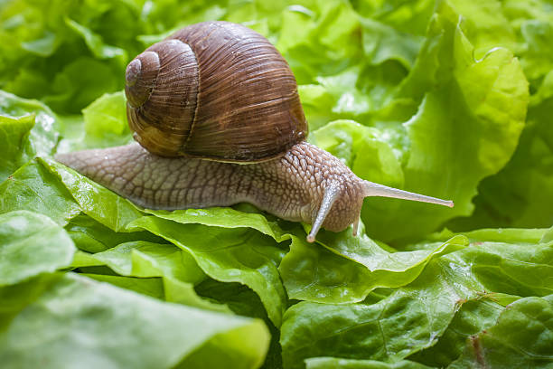
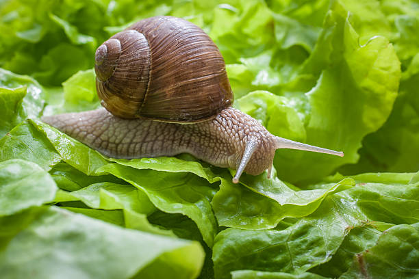

Img sources can be a URL of a file that you have saved locally:
 

Dont forget alt text!
gif files are images but they move like a video!

Audio elements are structured the same as image elements but we need to use the controls attribute to show the play/pause buttons. We can also loop the audio with the loop attribute!
Videos are similar in structure to the other media elements. We have a few more attributes to play with here, like controls, width/height and we can even include a placeholder image that displays until the user plays the video!